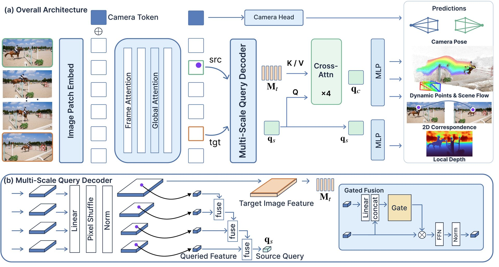
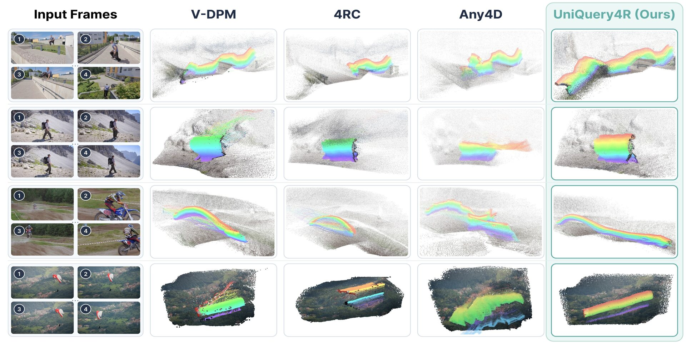

Waiting to load…
Visualization
Gallery
Select a sequence, then drag to orbit, pan, and scroll to zoom around the reconstructed 3D trajectories.
Choose a sequence
Preparing interactive viewer
Loading compact 3D reconstruction data.
Frame – / –
Visualization powered by Three.js. Drag to orbit, right-drag to pan, and scroll to zoom.
Benchmark
Interactive Comparison
Compare OpenD4RT, 4RC, V-DPM, and UniQuery4R under synchronized time and camera controls.
Waiting to load…
Waiting to load…
Waiting to load…
Drag any panel to update all four viewpoints. Timeline playback and frame seeking are shared.
Paper
Abstract
Reconstructing dynamic 4D scenes requires jointly estimating correspondence, geometry, object motion, and camera motion. Existing feed-forward methods typically predict dense task-specific maps or independently process source–target pairs, leading to unnecessary computation for sparse queries and limited feature reuse across different frame pairs.
We present UniQuery4R, a query-conditioned framework that encodes a multi-frame clip once and selects the source view, target view, and continuous source-image coordinate only at decoding time via source-to-target cross-attention. Each query jointly predicts target correspondence, target-time 3D position, and scene flow, along with source depth, while camera parameters are estimated per view.
This design allows the encoded clip to be reused across arbitrary source–target selections and supports both sparse inference and dense reconstruction through batched queries, without learned temporal embeddings tied to a fixed clip length. We further introduce a direction–magnitude parameterization of scene flow with separate supervision for moving and static points. Among the evaluated methods, UniQuery4R achieves the best macro-average results on WorldTrack for both scene-flow estimation and dynamic-point reconstruction.
Approach
Method Overview

Encode once
All views are jointly contextualized before the query is known, allowing the same encoded clip to serve arbitrary source–target selections.
Query continuously
Bilinear multi-scale sampling preserves sub-pixel coordinates and provides one interface for sparse on-demand inference and dense reconstruction.
Attend source to target
The source query attends over the full selected target field, recovering correspondence without fixed temporal embeddings or predefined matches.
Evaluation
Results
UniQuery4R obtains the best four-dataset macro average among evaluated methods on both WorldTrack tasks.
81.48%
Scene Flow τ@0.1m ↑
Macro EPE: 0.0530 m ↓
83.89%
Dynamic Point APD ↑
Macro EPE: 0.1601 m ↓
4.18 ms
Per additional 1k queries
Decoder linear fit R² = 1.000

Reference
BibTeX
If you find UniQuery4R useful, please cite our work.
@article{chen2026uniquery4r,
title = {UniQuery4R: Unified 4D Scene Reconstruction from a Single Query},
author = {Chen, Tiancheng and Tang, Sheng and Jin, Wenhua and Zhang, Weiqi
and Fang, Juntong and Zhou, Junsheng and Li, Zesong},
note = {Project page; publication details forthcoming},
year = {2026}
}